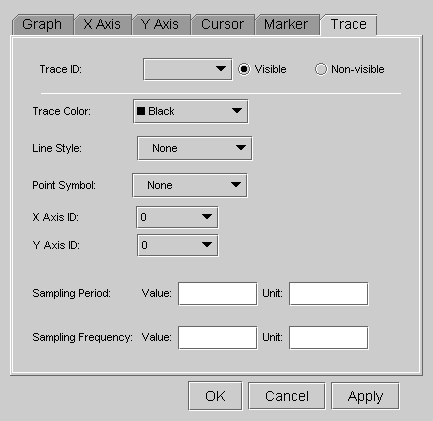

Trace Properties

Item |
Description |
|---|---|
Trace ID |
If the selected Data Display Panel has multiple traces, you must specify the target trace ID to be changed. Also, you can make the specified trace visible or non-visible with the corresponding check boxes (Visible/Non-visible). |
Trace Color |
Specify a color of the trace in this combo box. |
Line Style |
Specify a line style of the trace in this combo box. |
Point Symbol |
Specify a point symbol for the trace in this combo box. |
X Axis ID |
If the selected Data Display Panel has multiple axes, you must specify on which x-axis the trace is placed. |
Y Axis ID |
If the selected Data Display Panel has multiple axes, you must specify on which y-axis the trace is placed. |
Sampling Period/Frequency |
Specify sampling parameters of the trace. These parameters are not mere value/string. If the users specify this parameter, the graph will be changed based on the value/unit. |